Madagaskar: Trekking entlang der Eisenbahnlinie von Fianarantsoa nach Manakara
Reisedatum: 12. Juli – 5. August 2019
Die Detail-Reisebeschreibung finden Sie hier
Flugreise nach Madagaskar mit Kenya Airways 12./13. Juli:
Wir testen zum ersten Mal die Anreise mit Kenya Airways ab Genf über Nairobi nach Antananarivo.
Da der Flug ab Genf für 08:05 Uhr am Morgen geplant ist, müssen wir schon am Vortag nach Genf reisen. Mit dem Zug ist das ab St. Gallen in vier Stunden ohne Umsteigen zu machen. Wir kommen um 17:27 Uhr in Genève-Aéroport an. Leider gibt es keinen Baggage drop off Service, so sind wir gezwungen, die Koffer ins Hotel mitzunehmen. Der Hotelbus kommt schon nach kurzer Zeit und bringt uns ins IBIS-Hotel. Hier ist der Empfang höflich, das Zimmer ok und es bleibt uns genügend Zeit, mit dem Bus in die Stadt zu fahren. Hier gönnen wir uns das berühmte Entrecôte im Café de Paris chez Boubier an der Rue du Mont-Blanc 26.
Am anderen Morgen bringt uns der Bus um 06:40 Uhr wieder zum Flughafen, wo wir unseren Check-in beenden können.
Um ca. 09:00 Uhr fliegen wir los. Es ist für Kenya Airways der Erstflug ab Genf. In Rom ist ein Zwischenstopp vorgesehen. Aus den 75 Minuten werden dann mehr als zwei Stunden Aufenthalt, ohne Klimaanlage und Temperaturen von 29 Grad. Dabei wird noch geputzt und aufgeräumt. Mit etwa einer Stunde Verspätung fliegen wir wieder los Richtung Nairobi. Der Service an Bord ist dem von Air France ebenbürtig.
Hier in Nairobi haben wir zum Glück genügend Zeit, um die Verspätung aufzufangen. Die Embraer 190 bringt uns dann zeitgerecht nach Antananarivo (Kurzform: Tana). Nun zeigt sich der grösste Vorteil der Anreise über Nairobi: Mit den ca. 60 Passagieren, die um 01:50 Uhr in Tana ankommen, dauern die Einreiseformalitäten am Flughafen nur ca. 30 Minuten. Mit Air France dauerte das immer um die zwei Stunden.
Ankunft in Tana 14. Juli:
Der Hotelbezug im Anjary-Hotel ist ok. Am Sonntag machen wir zunächst einen Spaziergang zur Haute-Ville und blicken über die Hauptstadt. Dann besuchen wir den Königshügel Ambohimanga, wo ich meinem Reisepartner einen Überblick über die Geschichte Madagaskars vermittle.
Tana – Antsirabe 15. Juli:
Auf der Fahrt nach Antsirabe besuchen wir die «Alu-Pfannenfabrik» in Ambatolampy und fahren dann weiter bis Sambaina, wo wir in einem der vielen Hotelys unser Mittagessen einnehmen. Dann weiter bis Antsirabe. Hier besuchen wir die Ateliers für die Hornverarbeitung und die Herstellung von Mini-Fahrrädern. Auf dem Markt kauft Jürg noch eine Faserpelz-Jacke, da er gemerkt hat, dass es am Morgen empfindlich kalt ist.
Das Hotel Royal Palace ist super, aber etwas gross und anonym.
Zum Nachtessen finden wir uns im Japanese Restaurant Myzen Ramen gleich neben dem gedeckten Markt ein – ein Geheimtipp von unserem Chauffeur Mbola.
Antsirabe – Ranomafana 16. Juli:
 Die Fahrt nach Ranomafana ist abwechs-lungsreich, aber etwas lang. Unterwegs besichtigen wir eine Geraniumöl-Distillerie. Eigentlich ist es kein eigentliches Brennen, wie wir es von der Schnappsherstellung kennen, sondern das Öl wird mit Hilfe von Dampf aus den Pflanzen herausgelöst, dann abgekühlt und in einem Abscheider vom Wasser getrennt. Eine Medizinampulle voll Geranium-öl kostet 20’000 Ariary (ca. CHF 6.-)!
Die Fahrt nach Ranomafana ist abwechs-lungsreich, aber etwas lang. Unterwegs besichtigen wir eine Geraniumöl-Distillerie. Eigentlich ist es kein eigentliches Brennen, wie wir es von der Schnappsherstellung kennen, sondern das Öl wird mit Hilfe von Dampf aus den Pflanzen herausgelöst, dann abgekühlt und in einem Abscheider vom Wasser getrennt. Eine Medizinampulle voll Geranium-öl kostet 20’000 Ariary (ca. CHF 6.-)!
Im Hotely Faldor in Ambohimahasoa essen wir zu Mittag und um ca. 15:00 Uhr treffen wir in Ranomafana ein. Kurz vor dem Dorfeingang treffen wir noch auf zwei umgekippte Lastwagen, die einen gehörigen Stau verursachen.
Gegen Abend regnet es etwas. Die Unterkunft im Le Grenat ist ok.
Ranomafana 17. Juli:
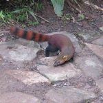
Am Morgen unternehmen wir eine Exkursion in den Regenwald. Unser Chauffeur hat uns sowohl einen Führer wie auch die Eintrittskarten besorgt, sodass wir gleich losmarschieren können. Die «Ausbeute» an gesichteten Tieren ist beachtlich: Spinnen, Uroplatus, Golden Bamboo-Lemur, Brauner Lemur, Sifakas, schwarz/weisser Vary, Calidia elegans (Ringelschwanzmungo) und 2 Chamäleons.Am Nachmittag besuchen wir nochmals das Walddorf, das ich schon 2017 besucht habe.
Fianarantsoa 18. Juli:
In Fianarantsoa besuchen wir zunächst das Fotomuseum von Pierrot Men, dann fahren wir zum bekannten Aussichtspunkt und besuchen schliesslich die Oberstadt.
Jetzt noch rasch den Bahnhof fotografieren und dann ab ins Hotel Ambalakely, ca. 10 km ausserhalb von Fianarantsoa (Kurzform: Fianar).
Welche Überraschung: Das Hotel, ursprünglich von Norwegern für Norweger gebaut, entpuppt sich als kleines Bijou. Eine sehr gepflegte Anlage in einem kleinen botanischen Garten. Zwei junge Angestellte an der Rezeption begrüssen und betreuen uns sehr herzlich. Die Zimmer sind grosszügig und sehr schön, das Nachtessen üppig. Das Hotel eignet sich aber leider nur als Etappenort, denn es gibt in der näheren Umgebung nichts zu besuchen oder zu sehen.
Teeplantage sidexam/Lac Hotel 19. Juli:
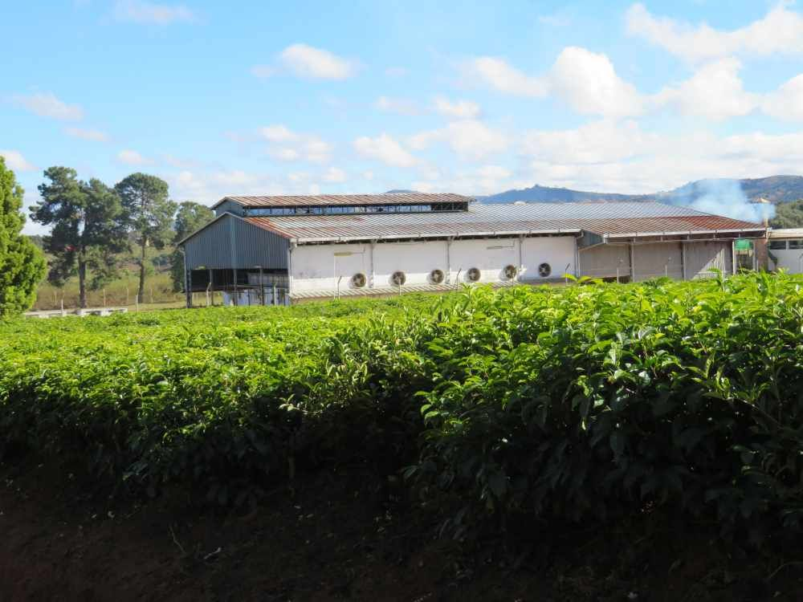
Am folgenden Tag dislozieren wir nach Sahambavy. Hier besuchen wir zunächst die einzige Teeplantage in Madagaskar. Über ca. 300 ha breiten sich die Teefelder aus. Leider ist im Moment nicht Pflücksaison und auf den Feldern fehlen die Farbtupfer der Pflückerinnen. Auch in der Fabrik stehen die Maschinen still. Der Führer erklärt aber minutiös die Funktionsweise aller Anlagen und schildert auch, dass der grösste Teil des Tees nach Kenia auf den Weltmarkt für afrikanischen Tee exportiert wird. Zum Schluss gibt es noch eine Degustation von Schwarz- und Grüntee. Wir haben auch Tee gekauft. Ein Besuch ab dem Monat September, wenn wieder Tee gepflückt und verarbeitet wird, wäre natürlich interessanter.Nach dem Besuch der Teeplantage gehen wir ins Lac Hotel, wo wir unsere Bungalows beziehen.
Am Abend sehen wir noch kurz Andreas, unseren Führer für die nächsten Tage.
5 Tage Trekking 20. – 24. Juli:
Tag 1:
Andreas ist schon früh bei uns im Hotel. Die erste Etappe ist mit 24 km die längste und so starten wir bereits kurz nach 07:00 Uhr. Schon bald merken wir, dass das Gehen auf dem Gleis, d.h. von Schwelle zu Schwelle, mühsam ist und auch bleiben wird. Immer wieder suchen wir einen schmalen Pfad neben den Gleisen. Aber wir sind guten Mutes und wandern zügig.
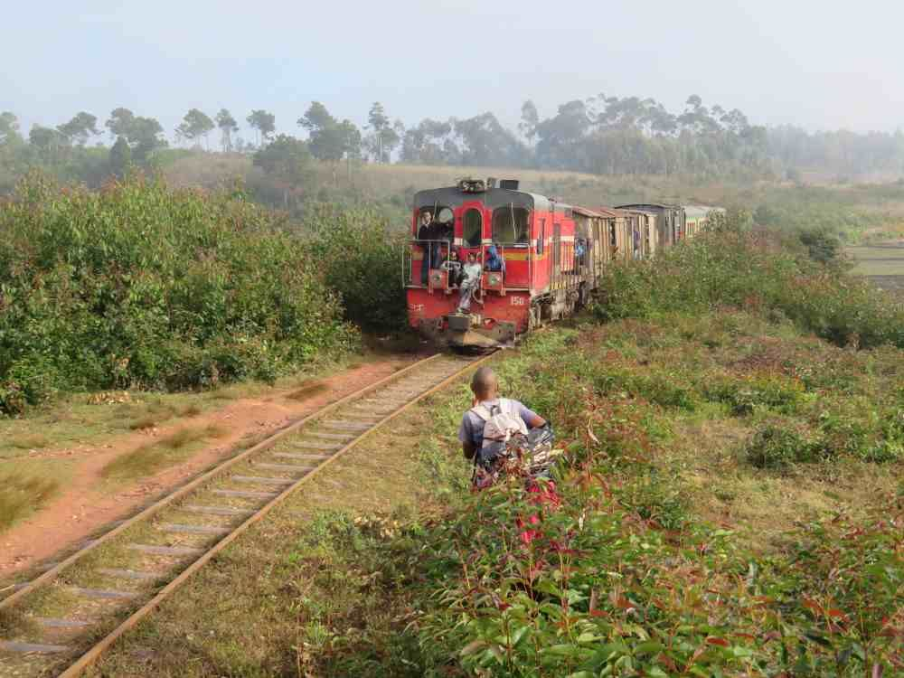
Schon nach etwas mehr als einer Stunde überholt uns der fahrplanmässige Zug. Jede Angst vor diesem Zug ist gewichen, denn erstens hört man ihn schon von Weitem herannahen und zweitens fährt er so langsam, dass man ihm schon fast nachrennen kann.Bei der Station Ampitambe treffen wir wieder auf den Zug. Er hält hier und die Bahnangestellten müssen etwas rangieren, d.h. der Zug fährt hin und her und schiebt verschiedene Güterwagen umher.
Weiter geht’s entlang des Gleises und schon bald überholt uns der Zug erneut. Auf diesem Abschnitt verläuft die Bahnstrecke oft in einem Geländeeinschnitt, sodass der Blick in die Landschaft ausbleibt. In Ranomena ist es ganz matschig und schmutzig, wir machen aber trotzdem eine kurze Pause. Etwas später erreichen wir den langen Tunnel: 1070 Meter. Das heisst Taschenlampe herausnehmen, um für die nächste Viertelstunde die Szenerie zu beleuchten. Neben dem Gleis verläuft zum Glück ein Plattenweg und wir kommen gut voran. Der Tunnel ist so breit, dass selbst eine weitere Begegnung mit dem Zug kein Problem gewesen wäre.
Um ca. 13:30 Uhr erreichen wir Andrambovato, das Heimatdorf von Andreas. Er führt uns dann auch gleich in sein «Hotel». Hier hat es Zimmer mit richtigen Betten. Man bräuchte nicht einmal einen Schlafsack. WC und Dusche sind halt «à la malagasy». Es bleibt noch genügend Zeit, um das Dorf zu erkunden. Leider gibt es in keinem Lädeli Wasser zu kaufen. Also muss ich Wasser filtern.
Das Abendessen, von Andreas und seiner Frau zubereitet, ist super: grilliertes Steak, Gemüse, Reis, flambierte Banane und Rum. Andreas erzählt auch von seinen Angeboten und Projekten. Es ist nicht nur unser Führer, sondern bietet auch selbstständig Wandertouren in der Umgebung an.
Nach dem Abendessen hören wir Zuglärm. Im Bahnhof ist die Draisine eingefahren und holt offenbar einen Wagen mit Bananen für Fianarantsoa ab.
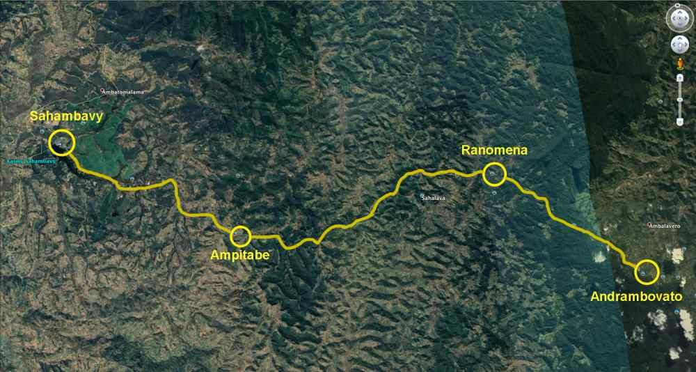
Tag 2:
Wir nehmen das Frühstück erst um 07:30 Uhr ein, denn die heutige Strecke ist mit 17 km ein gutes Stück kürzer, als am Tag zuvor. Andreas und seine Frau haben das Frühstück wiederum mit Liebe zubereitet. Neben Kaffee oder Tee, Brot, Margarine sowie Honig gibt es auch einen Brei aus Reismehl, Bananen und Erdnüssen, eingewickelt in Bananenblätter und über Dampf gegart.
Um 08:40 Uhr starten wir zur heutigen Tour. Die Strecke ist jetzt offener und auf der linken Seite zeigt sich häufig eine prächtige Aussicht über das Land. Hier gibt es noch viele Dörfer der Tanala, den Waldbewohnern. Nur leider gibt es fast keinen Wald mehr. Nach ca. 3 km passieren wir einen längeren Tunnel und gleich darauf treffen wir auf der rechten Seite auf einen grösseren Wasserfall.
Schon bald kommen wir zur Station Madiorano, die wir ohne längeren Halt hinter uns lassen. Jürg läuft und läuft. Nebst Andreas haben wir jetzt auch Jean, unseren Träger, dabei.
Wiederum um 13:30 Uhr treffen wir in Tologoina, unserem heutigen Tagesziel, ein. Die Unterkunft ist sehr einfach und leider ist diesmal der Kontakt zur Familie auch nicht sehr intensiv.
Das Dorf Tolongoina ist etwas ungepflegt. Auf dem Bahnhof fährt aber der Zug aus Manakara ein und beschert dem Dorf eine Abwechslung.
Ich gehe zum Fluss, um darin zu baden und mich zu erfrischen.
Andreas gibt sich wiederum Mühe mit dem Nachtessen und serviert uns Koteletts und Pommes. Auch ein Bier ist dabei.
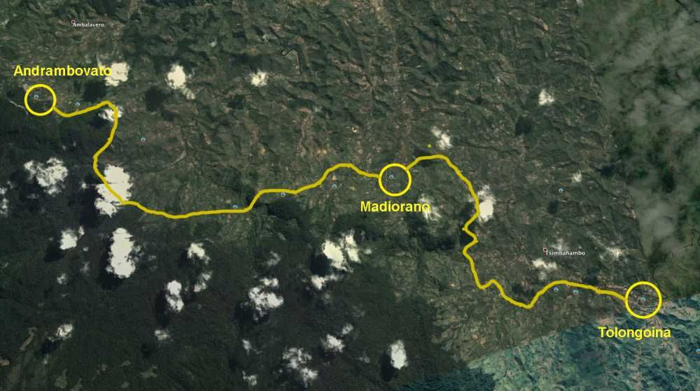
Tag 3:
Offenbar ist Andreas mit den Hausherren auch nicht besonders warm geworden und so serviert er uns das Frühstück auf dem Zimmer. Unsere Weiterreise erfolgt dann zeitig um 8 Uhr.
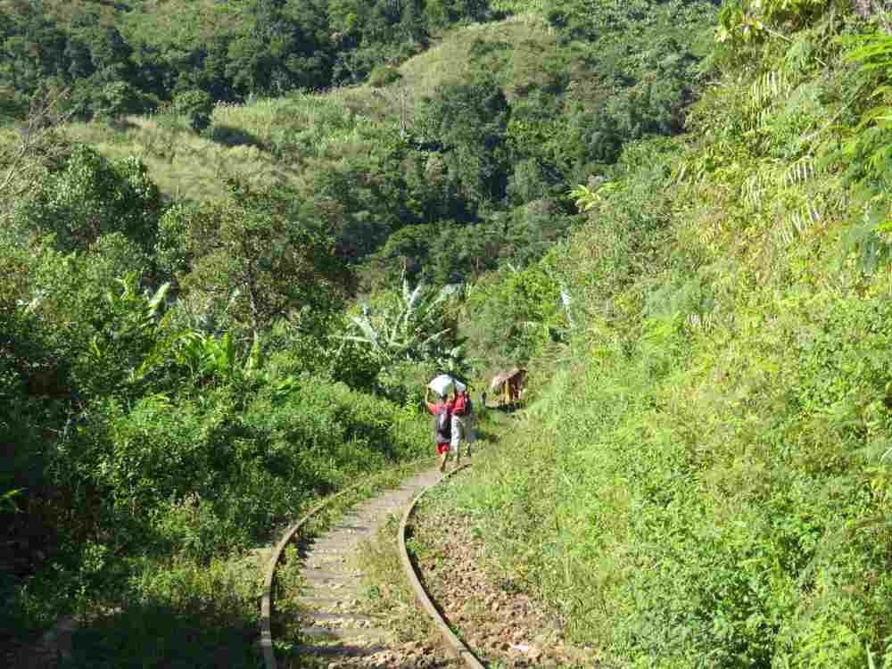
Wiederum stampfen wir auf den Schwellen. Wir können erkennen, dass es zwei verschiedene Typen von Schwellen gibt: eine stammt aus einem Stahlwerk aus Deutschland, eine weitere aus Frankreich. Einige Schwellen sind aus Holz. Auf diesen lässt es sich bequemer gehen. Überhaupt bleibt der Blick ständig auf die Gleise gerichtet und wir können deren Zustand ausgiebig inspizieren. Dabei gehen die Gedanken noch viel weiter: Die Eisenbahnlinie ist für die Region sehr bedeutend, aber der Zustand der gesamten Anlage verheerend. Auch gibt es nur noch eine einzige Lok, die häufig ausfällt sowie repariert werden muss. Was bräuchte es, die Bahn komplett zu sanieren? Wäre die Weltbank nicht bereit, dafür einen Kredit auszusprechen? Wo müsste man mit der Sanierung beginnen und wie ist sie durchzuführen, sodass die Bahn nicht für längere Zeit stillgelegt ist?Unterwegs kommen wir an einer Station vorbei, die eigentlich gar keine ist. Volohosy ist nur ein Verladeort für Produkte aus der Gegend und wo der Zug nur nach Bedarf hält. Aber nach 10 km erreichen wir die offizielle Station Amboanjobe.
Kurz vor Manampatrana sehen wir unten rechts im Tal das Tanala-Dorf Ambohimalaza. Es wäre schön dorthin zu gehen, aber erstens ist es ein doch relativ grosser Umweg und zweitens sieht das Dorf recht “umgebaut“ aus, d.h. es hat viele Dächer aus Wellblech. Also ziehen wir weiter entlang der Trasse.
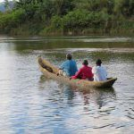
In Manampatrana finden wir wieder eine einfache, aber saubere Unterkunft sowie auch einen freundlichen Empfang durch die Hausherrin.Für Jürg finde ich noch eine Piroge auf dem Fluss Faraony. Er kann mit Andreas und dem Piroguier eine halbe Stunde auf dem Fluss umherfahren.
Die Nacht ist etwas laut, ein Generator lärmt bis um Mitternacht und viele Hunde bellen in der Ferne. Am frühen Morgen sind es dann die Hähne, die ein ruhiges Schlafen unmöglich machen.
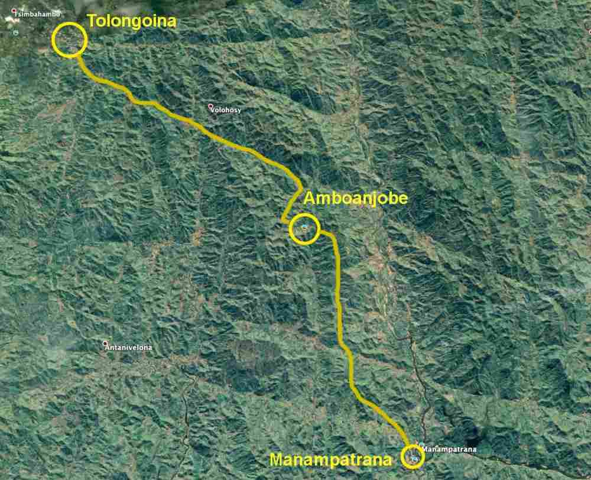
Tag 4:
Der 4. Tag verläuft analog zu den anderen. Nach 9 km erreichen wir die Station Ionilahy und bald darauf die schön geschwungene Brücke über den Faraony. Solche Bauwerke ziehen offenbar einige Leute an. Wir treffen verschiedene Gruppen von Madagassen auf der Brücke. Leider fährt kein Zug, er wäre eine schöne Dekoration auf den Fotos gewesen. Die zweite Hälfte zieht sich dann subjektiv in die Länge. Sind wir denn schon so müde?
Zum Glück ist die Unterkunft recht schön. In einem gemauerten Haus finden wir komfortable Zimmer. Auch WC und Dusche gibt es, aber mit Wasser aus dem Eimer.
Andreas hilft der Herbergsmutter beim Kochen und so gibt es wiederum ein sehr schmackhaftes Abendessen: Suppe, paniertes Hähnchen und Pommes frites.
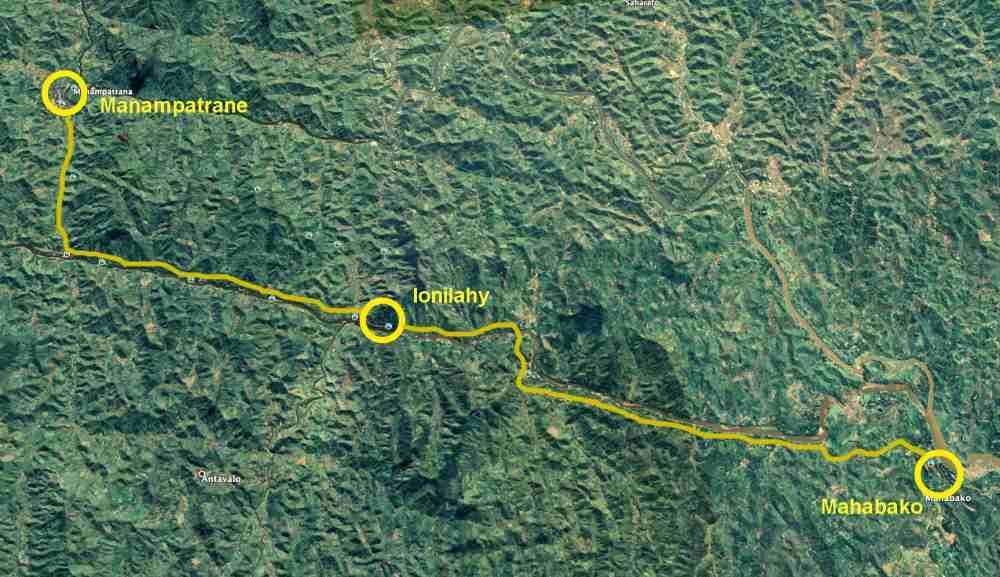
Tag 5:
Um 8 Uhr brechen wir auf zur letzten Etappe. Bis zur Station Fenomby geht es zügig voran. Dann macht die Eisenbahnlinie einen tüchtigen Bogen nach Norden, sie muss ja mehr oder weniger dem Gelände folgen. Ein Anwohner macht uns auf eine Abkürzung aufmerksam. Ist ja naheliegend, dass man zu Fuss eher auf- oder absteigen kann. Zu Beginn dieser Abkürzung geht es durch wunderschöne «Gärten», d.h. lichte Wälder mit ganz verschiedenen Bäumen: Mangos, Brotfrüchte, Litschis, Kaffee sowie vieles mehr. Auch kleine Dörfer finden wir mit Frauen sowie Kindern. Andere Personen kommen uns entgegen, ein Mann trägt eine Schachtel mit einem TV-Gerät nach Hause.
Weiter unten erreichen wir ein Tal mit Reisfeldern und einem Flüsschen. Da gilt es dann zwei- oder dreimal den Bach zu überqueren. Also Schuhe ausziehen (Jürg) oder einfach mit den Schuhen durchwaten (Peter). Dann folgt ein kurzer, steiler Aufstieg, um wieder auf die Bahntrasse zu gelangen. Hat sich die Abkürzung gelohnt: landschaftlich ja, zeitlich nein.
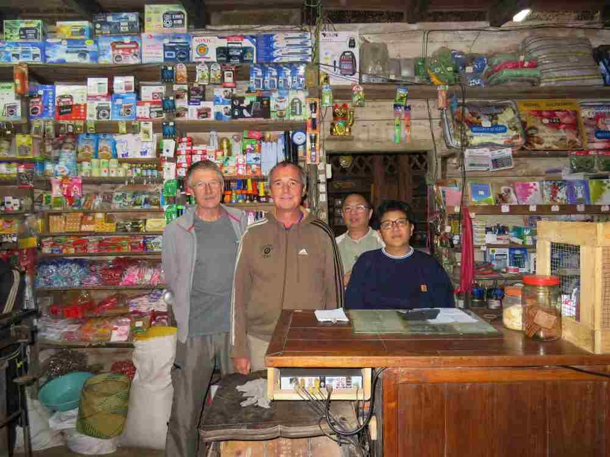
Jetzt ziehen sich die restlichen Kilometer wieder in die Länge und wir erreichen Sahasinaka recht müde. Dazu kommt, dass Andreas den direkten Weg zu unseren Gastgebern auch nicht kennt. So müssen wir uns ein wenig durchfragen. Aber wir schaffen es und erreichen einen Supermarkt. Es ist ein grosses Holzhaus mit einem riesigen Allerweltsladen. Er gehört dem Chinesen Roger und seiner Frau Suzette. Hier gibt es wohl alles zu kaufen, was man in so einem Dorf braucht. Für mich stellt sich nur die Frage, wie findet man einen Gegenstand in diesem Gewirr von Gestellen, Tablaren und Vitrinen?
Nach der sehr herzlichen Begrüssung durch die ganze Familie (es gibt mehrere erwachsene Söhne) gibt es noch im Laden das Mittagessen: Grillpoulet, Makkaroni, Rüebli, Bohnen und Salat.
Und plötzlich steht Mbola, unser Chauffeur für die weitere Tour, in der Tür. So ist alles gut und die Weiterreise gesichert.
Die Zimmer sind die ehemaligen Kinderzimmer, ganz in Holz, aber schön. Es gibt ein richtiges WC und eine Dusche mit kaltem sowie warmem Wasser!
Jetzt reicht es noch für einen Dorfrundgang und einen Abstecher zum Fluss.
Zum Nachtessen sind wir bei der Familie eingeladen. Das Essen ist überaus reichhaltig, die Unterhaltung gut und es gibt sogar Wein. Super.
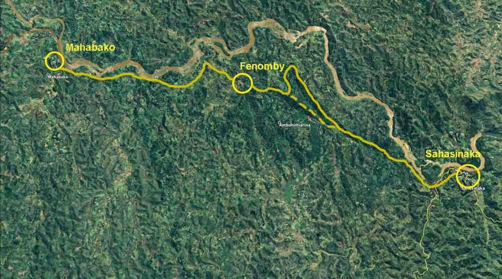
Auf nach Manakara 25. Juli:
Das Frühstück nehmen wir wieder zusammen mit Roger und Suzette ein, es gibt alles, was der Magen begehrt: Koba, Brot, Butter, Konfitüre, Honig, Kaffee und Tee.
Der Abschied fällt uns fast ein wenig schwer. Wir machen noch ein Foto im Laden und dann heisst es: «Adieu».
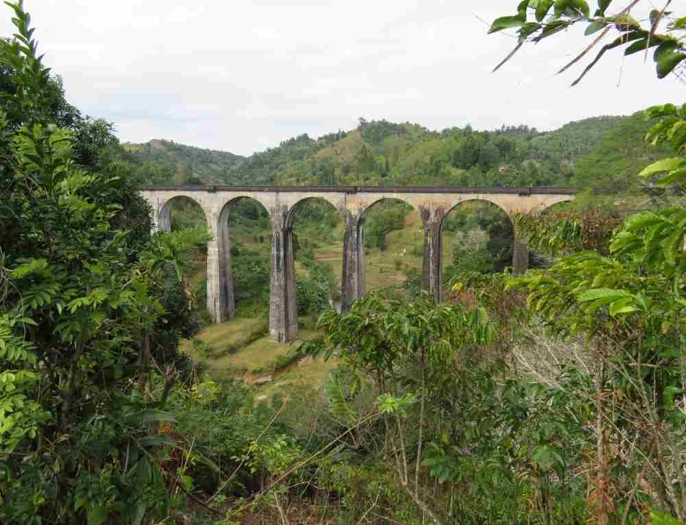
Mbola fährt uns über die abenteuerliche Piste Richtung RN12. Unterwegs sehen wir das grosse Viadukt der FCE. Auf der Westseite stehen viele Baucontainer an der Strasse. Offenbar sind sie dran, das Viadukt zu renovieren. Ist das ein Hoffnungsschimmer für die Bahn?In Manakara beziehen wir unsere Zimmer bei Sandrina. Sie ist die Tochter von Roger und führt zusammen mit Christian das Hotel La Résidence. Auch hier ist alles bestens: schöne Zimmer sowie gutes Essen auf einer grossen Dachterrasse.
Andreas ist mit uns bis nach Manakara gefahren, hier nehmen wir von ihm Abschied. Er wird mit dem Taxi Brousse zurück nach Fianarantsoa und Andrambovato fahren.
Pangalanes-Kanal 26. Juli:
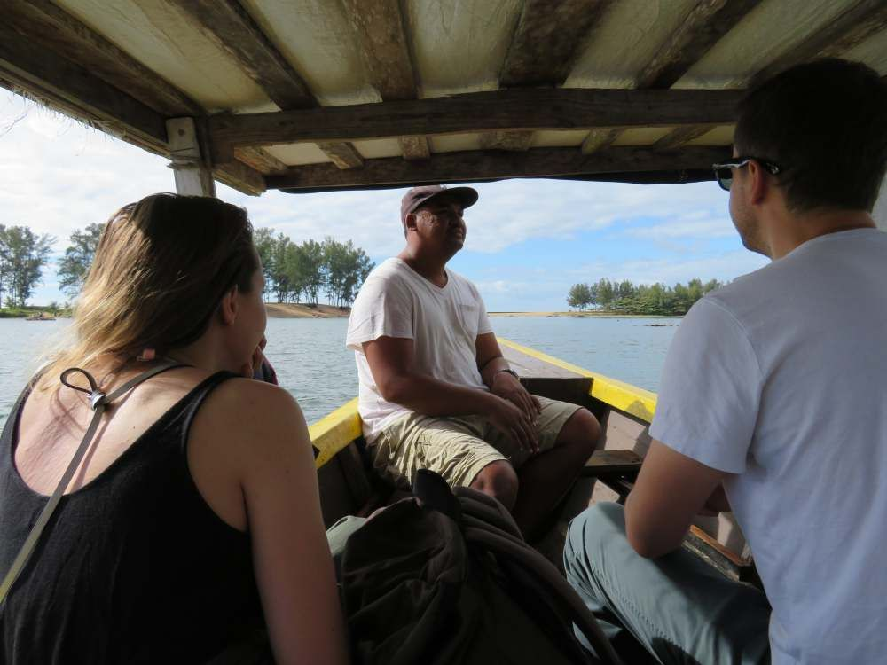
Zusammen mit zwei anderen PRIORI-Reisenden (Françoise und Yves) unternehmen wir einen Tagesausflug auf dem Pangalanes-Kanal. Christian und seine Crew erwarten uns auf einem Boot mit Aussenbordmotor.Zuerst fahren wir zum «Fischmarkt». Zu diesem Strandabschnitt kehren die Fischer am Morgen zurück, um ihre Fische den Frauen abzuliefern. Christian deckt sich hier mit den «Fruits de Mer» für unser Mittagessen ein. Dann fahren wir weiter Richtung Süden. Etwa zwei Stunden schippern wir auf dem Kanal, die Kulisse ist abwechslungsreich. Fischerhütten wechseln mit Sumpflandschaft ab. Bei einem kleinen «Dorf» halten wir und lassen uns die Gewinnung von verschiedenen ätherischen Ölen erklären. Eine Frau verkauft uns dann auch die kleinen Flacons.
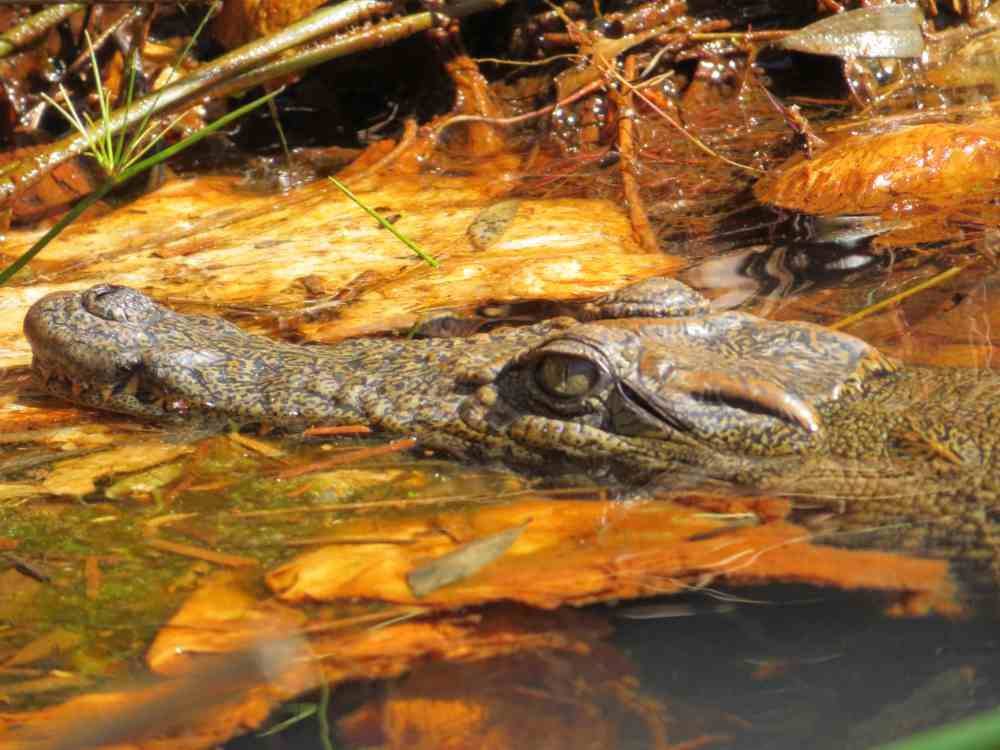
Wir wollen aber unbedingt noch ein Krokodil sehen. Wir fahren weiter. Dank des Motors können wir weiter hinausfahren, als die anderen Ausflugsboote. Und siehe da, einer der Männer erspäht im Schilf ein kleines Krokodil, es ist ca. 1,20 Meter lang und liegt unbeweglich da. Was für ein Glück!Nun haben wir mittlerweile Hunger, darum geht es zurück zum Picknick-Platz. Hier haben zwei Mitglieder der Crew bereits Feuer gemacht und das Essen vorbereitet. Das Essen ist feudal: Lobster, Crevetten, Fisch, Reis, Gemüse sowie Rum. Wasser gibt es natürlich auch.
Zurück am Anlegesteg werden wir von Frauen begrüsst, die uns verschiedene Waren verkaufen möchten: Vanille, Taschen, Decken, etc.
Vohipeno 27. Juli:
Für den zweiten Tag in Manakara hat uns Franz Stadelmann vorgeschlagen, nach Vohipeno zu fahren. Denn hier sollten wir das Restaurant «La Source» aufsuchen und dort «Angozo» oder «Hoditrahoby» probieren. Am Eingang des Dorfes finden wir das Restaurant. Es sieht gut aus, hat auch einen grossen Saal für Feste.
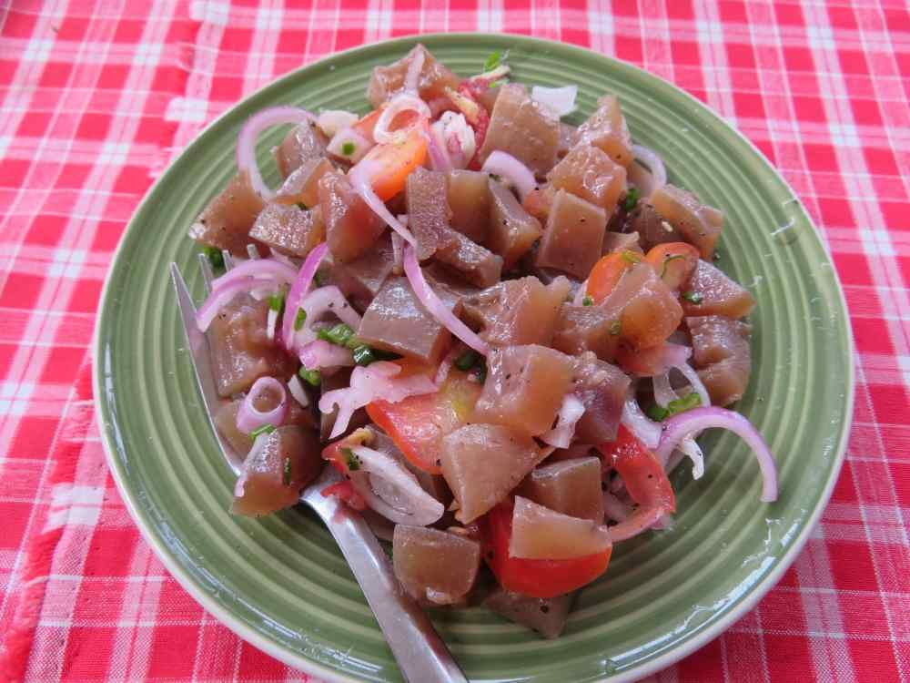
«Angozo» entpuppt sich als Ochsenmaulsalat, nur sind es kleine Stücke und nicht fein geschnittene Scheiben wie bei uns. Schmeckt aber sehr gut und ist sehr preiswert.So ist es heute Samstag und schon die ganze Woche über hiess es, dass im Moment kein Zug hinauf nach Fianarantsoa fährt. So gehen wir auf unserem Rückweg beim Bahnhof von Manakara vorbei und erkundigen uns über die aktuelle Situation. Und tatsächlich ist weder ein Zug nach Manakara unterwegs noch fährt am Sonntag einer hinauf. Damit fällt leider ein wichtiger Teil unserer Reise aus. Die Fahrt wäre wirklich schön gewesen, um unser Trekking noch einmal in entgegengesetzter Richtung vom Zug aus Revue passieren zu lassen.
Dafür ist der Abend jedoch sehr verlockend: Françoise und Yves dürfen bei Sandrina kochen. Wir gehen also zurück ins Hotel und schauen ihnen zu, wie und was sie alles unter Anleitung der Köchinnen zubereiten.
Wir werden dann auch zum Abendessen eingeladen. Es gibt Schweinefleisch, Poulet, Fisch, Süsskartoffeln, Frites de Manioc, Ananas-Salat sowie ein Dessert.
Vor dem Schlafengehen unternehme ich noch einen kleinen Spaziergang vor dem Hotel.
Zurück nach Ambalakely 28. Juli:
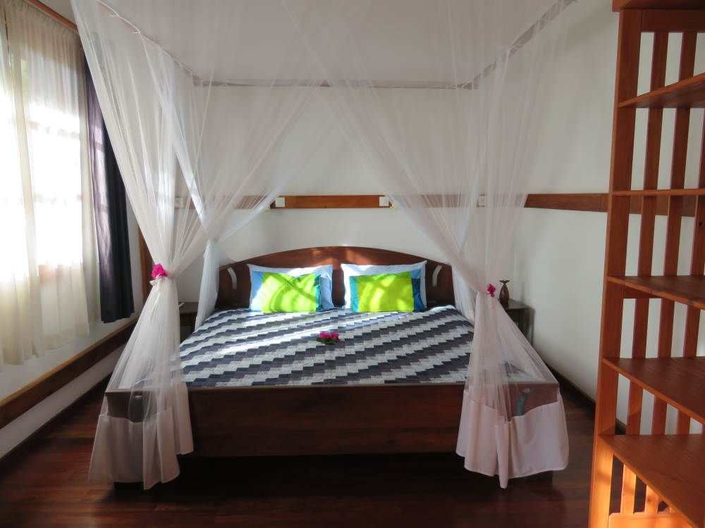
Eben, weil kein Zug fährt, sind wir gezwungen mit dem Auto ins Hochland zurückzufahren. Auf der 2-stündigen Fahrt bis nach Irondo kommen wir an einer Plantage vorbei, wo wir Ylang-Ylang-Blüten mit ihrem betörenden Duft finden. In Irondo machen wir einen Halt, um Kaffee zu trinken und etwas zu essen. Dann geht’s weiter bis Ranomafana zum Mittagessen in einem Hotely im 1. Stock.Im Hotel Ambalakely werden wir wiederum überrascht. Die Rezeptionistin gibt uns das beste Zimmer. Als Promotion sagt sie. Wir sollten bei PRIORI dann nur Gutes erzählen. Alles ist wiederum super. Zum Diner nehmen wir allerdings diesmal nur ein 1-Gang-Menü.
Ambalavao 29. Juli:
Zum Frühstück werden wir mit Leckereien überhäuft. Uns erstaunt nichts mehr.
Auf der Strecke nach Fianar kommt uns ein Güterzug mit der Diesellok entgegen. Gäbe es eventuell doch noch eine Möglichkeit die Zugfahrt zu unternehmen? Am Bahnhof erkundigen wir uns. Die Lok sei nur behelfsmässig repariert und könne nur bis nach Sahambavy fahren. Für die Bergstrecke sei sie noch nicht bereit. Also wieder nichts, leider.
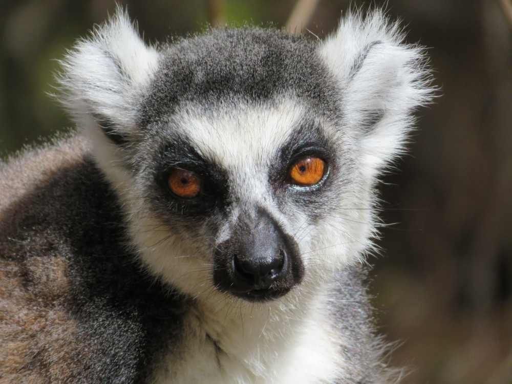
Wir fahren nach Ambalavao sowie zum Anja-Park. Der Rundgang ist sehr schön, wir sehen Kattas sowie Chamäleons und sogar eine kleine Schlange.Zurück in Ambalavo finden wir ein Restaurant einer Chinesin: Sie serviert uns ein Entrecôte géant (350 g). Da ist zwar noch ein Knochen dran, aber auch ohne ist es immer noch «géant».
Das Hotel Tsienimparihy ist ganz nett. Nur zum Abendessen warten wir 2 Stunden und verlassen dann das Restaurant, ohne gegessen zu haben. Was aber nicht so schlimm ist, so hatten wir ja bereits zum Mittag viel gegessen.
Ambalavao 30. Juli:
Heute ist fast ein Ruhetag. Wir besuchen am Vormittag ein Seidenatelier sowie die «Fabrik» für das Papier Antaimoro.
Den Nachmittag verschlafen wir im Bungalow und lesen.
Das Nachtessen kommt heute pünktlich und der Tee wurde extra mit Eau vive zubereitet.
Ambositra 31. Juli:
Am Vormittag wollen wir eigentlich noch den grossen Zebumarkt in Ambalavao besuchen. Es ist aber noch zu früh. Die Tiere werden offenbar erst gegen Mittag aufgeführt. So lange können wir leider nur nicht warten.
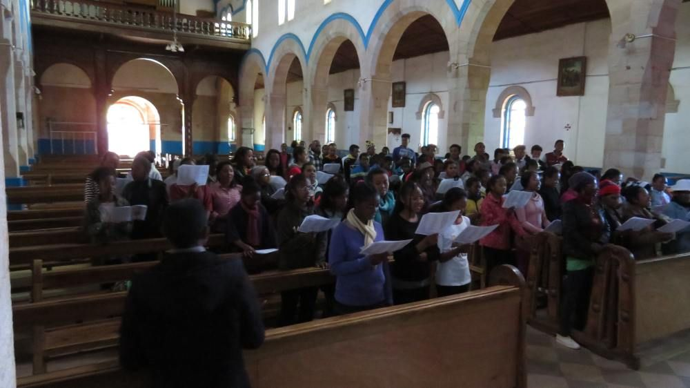
Wir fahren also nach Fianar. Hier bestätigt sich für mich einmal mehr, dass es eine eher schmutzige Stadt ist.Bei der Ankunft im Hotel Artisant in Ambositra findet just in dem Moment eine Tanzvorführung für eine grössere Reisegruppe statt, bei der wir kurz zuschauen. Wir dürfen vor Ort in Bungalows schlafen.
Jürg ist müde und verschläft den Nachmittag. Ich gehe durch die Stadt und wohne einer Chorprobe in der Kathedrale bei.
Antsirabe 1. August:
Wir fahren non-Stopp bis zum Lac Tritriva.
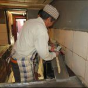
Hier hat sich die Situation nochmals geändert: Neben einem Eintrittspreis muss man auch noch einen Führer nehmen (und bezahlen). Der See ist aber trotzdem schön wie eh und je. Die Frauen mit den Steinen sind immer noch da, eine behauptet sogar, sie kenne mich noch.
Beim Lac Andraikiba essen wir einige Brunnenkresse-Plätzchen. Auf dem Rückweg besuchen wir wiederum die Bonbon-Fabrik und gehen dann ins Hotel Royal Palace.
Antsirabe 2. August:
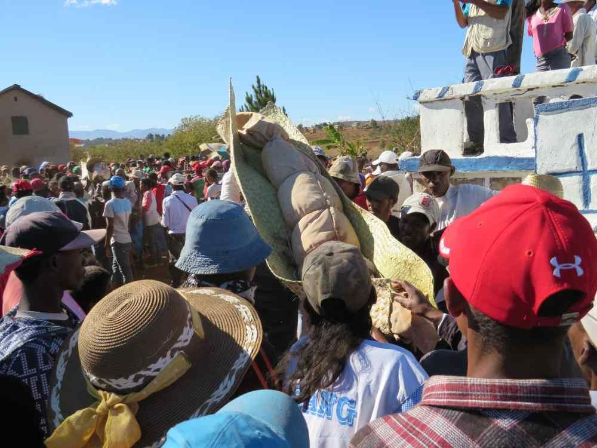
Am Vormittag besuchen wir die Markthalle in der Stadt, flanieren etwas herum und kaufen Erdnüsse und Reis. Auch verschiedene Steine werden uns angeboten, aber wir verzichten. In einer Epicerie kaufe ich Wasser und die Frau verkauft mir noch eine Kugel aus Rindenstreifen eines Baumes «pour augmenter la puissance de l’homme». Zurück zum Hotel fahren wir in einem Cyclopousse (Fahrradrikscha).Für den Nachmittag hat uns Mbola eine Famadihana (Totenumbettung) gesucht. Es ist eine riesige mit vielen hundert Teilnehmern. Mbola hat alles sehr gut organisiert. Sogar einen Leibwächter hat er uns zur Seite gestellt. Nachdem die Leichen aus dem Tombeau geholt und mit viel Musik und Lärm neu eingewickelt wurden, verschwinden wir wieder. Zum Glück wie uns Mbola später erzählt, denn die «Party» sei noch ausgiebig mit Rum gefeiert worden.
Zum Abendessen gehen wir nochmals zum Japaner.
Zurück in Tana 3. August:
Auf der Rückfahrt nach Tana haben wir keine Probleme, nur die Einfahrt in die Stadt ist wie immer mühsam. Jürg ist glücklich, weil sein Zimmer im Anjary-Hotel viel besser ist als bei unserer Ankunft.
Zum Nachtessen gehen wir zusammen mit Ellen und Franz von PRIORI ins Bourbon.
Letzter Tag in Tana 4. August:
Am Vormittag unternehmen wir noch einen ausgedehnten Spaziergang in die Oberstadt und kehren beim Gargotier ein, essen Sambosa und trinken Bier.
Um 13 Uhr kommt Mbola und fährt uns zum Flughafen.
Rückflug:
Der Rückflug von Jürg ist problemlos, nur hat er in Genf ca. 2 Stunden Verspätung. Mein Rückflug ist sehr pünktlich, nur ca. 20 Min. Verspätung in Genf.
Peter Elliker
Infos und Hinweise zum Trekking entlang der Eisenbahnlinie:
Gleiswandern:
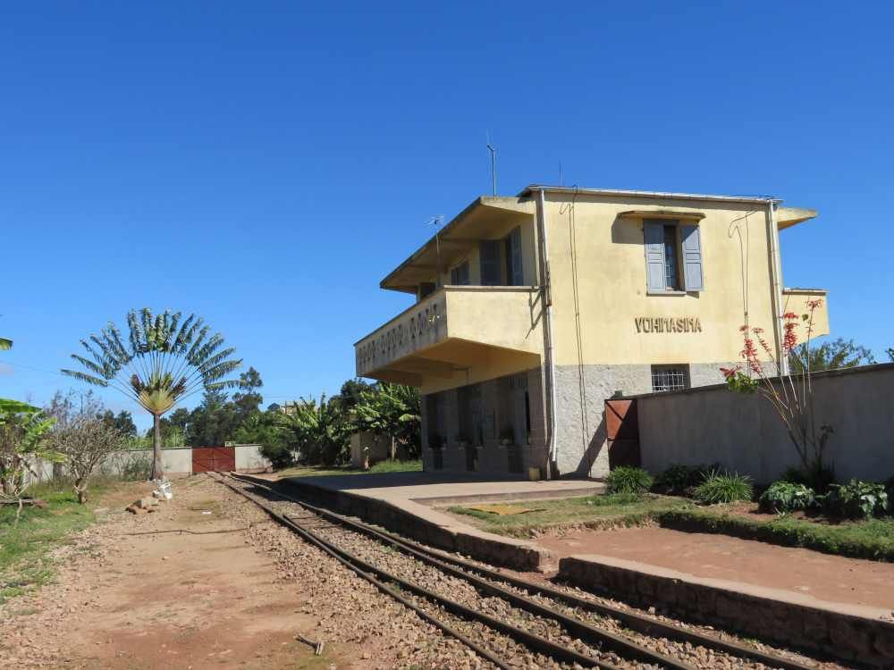
Die total 95 Kilometer entlang der Bahnstrecke haben schon etwas Besonderes an sich. Etwa 60% der Strecke kann man auf einem schmalen Pfad neben den Gleisen oder dann auf einer Mauer von Entwässerungs-kanälen gehen. Da kann man auch seinen eigenen Tritt gehen. Die restlichen 40% sind allerdings wirklich Schwellenstampfen. Diese Schwellen haben auch nicht immer den gleichen Abstand und so muss man den Blick konstant auf diese Schwellen gerichtet haben. So gesehen muss man die Sache etwas sportlich nehmen.Die Etappen (24, 17, 17, 20, 17 Kilometer) waren gut gewählt. Wir sind immer um ca. 13:30 Uhr am Etappenort eingetroffen, konnten uns so wieder etwas ausruhen und auch die Dörfer erkunden.
Ausrüstung:
Wir haben unsere Rucksäcke selbst getragen. Darin befanden sich eine Apotheke, Fotoausrüstung, Wasser, Regenschutz, leichter Schlafsack und etwas Ersatzwäsche. Nach der 2. Etappe habe ich gewaschen.
Dem Schuhwerk muss man besondere Beachtung schenken. Für den Marsch auf den Schwellen sollte man eine starke Sohle haben. Leichte Wanderschuhe oder gar Turnschuhe sind nicht geeignet.
Um das Essen oder die Küche brauchten wir uns nicht zu kümmern, dafür hat Andreas gesorgt, wobei er an den Etappenorten immer in einer Küche kochen konnte.
Telefon/Notfälle:
Mit Orange hat man auf fast der gesamten Strecke kein Netz. Besser ist Telma, ca. 80% Abdeckung.
Das Trekking ist nicht besonders unfallgefährdet. Es ist darum nicht mit grösseren Unfällen zu rechnen. In Tolongoina gibt es ein einfaches Spital und eine Evakuierungmöglichkeit auf einer sehr schlechten Piste Richtung Norden (ca. 45 km bis zur RN25, Ifanadiana). In Sahiainaka gibt es ebenfalls ein Spital.